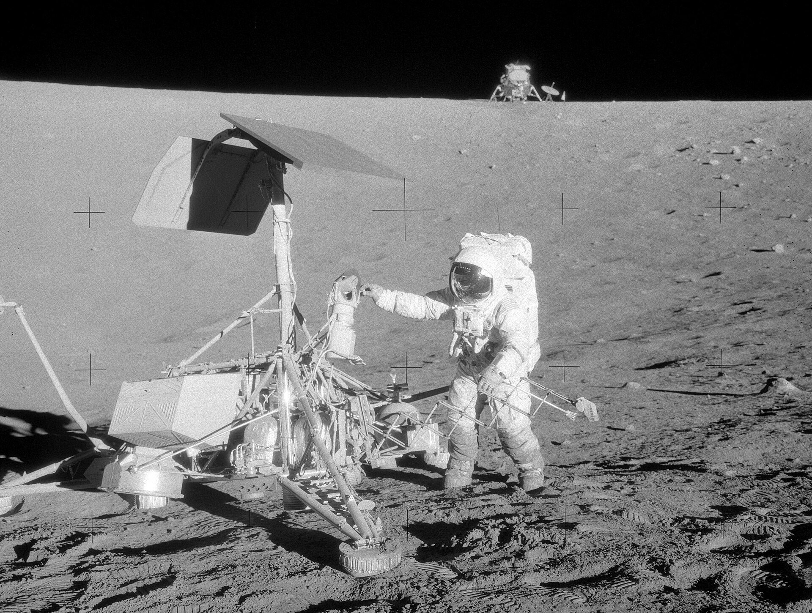

Explore the Moon
Discover the machines left behind on the lunar surface.
Surveyor 3

Image credit: NASA
A robotic spacecraft that landed on the Moon in 1967.
Explore Mission
Surveyor 3 landed on the Moon on April 20, 1967. It studied the lunar soil and helped NASA prepare for the Apollo missions.
In 1969, Apollo 12 astronauts visited Surveyor 3 and returned some of its components to Earth for scientific analysis.
Status: Inactive — remains on the Moon.
Lunar Roving Vehicle

Image credit: NASA
A vehicle that helped Apollo astronauts explore the Moon.
Explore Mission
The Lunar Roving Vehicle was used during Apollo 15, 16, and 17 between 1971 and 1972.
It allowed astronauts to travel farther, collect lunar samples, and conduct scientific experiments.
Three lunar rovers were left on the Moon after their missions.
Status: Inactive — remains on the Moon.